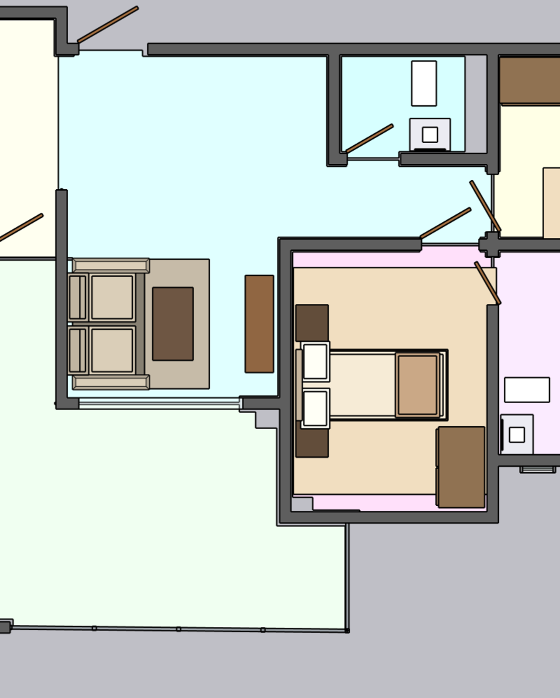
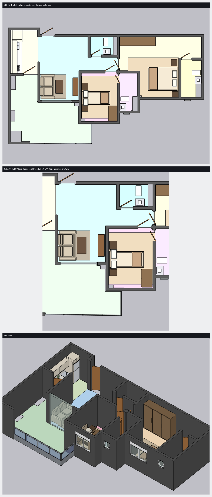

SALA r002 — crop do top: sofá+tapete (esq) · rack TV FLUTUANDO no meio · lado JANTAR vazio

Apê inteiro (sala = azul, no contexto) + iso 3D

✅ Aproveitável
- Sofá + tapete (cluster de estar)
- Sala grande e bem integrada (estar/jantar/terraço/cozinha)
- Geometria limpa — sem overlap/degenerado
❌ Errado / lixo legado
- Rack TV flutuando no meio — sem parede atrás (#1)
- Mesa de jantar AUSENTE — lado jantar vazio
- Sala sub-mobiliada, sem zonas
- "Parede concreto gigante" = material de render, não estrutura
🚧 Circulação
- Nada bloqueia (gates PASS), mas o rack solto corta o fluxo
- Eixos: sala↔terraço · sala↔cozinha · sala↔quartos
📐 Decisões p/ propagação
- Parede-TV: ancorar o rack numa parede real
- Sofá: encarando a parede-TV + tapete delimitando
- Jantar: zona vazia perto da cozinha
- Rack → planned_niche: painel de TV na parede (não móvel solto)